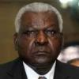

Consejo de Estado de Cuba
El camino hasta la IX Legislatura
Cuba se encuentra inmersa ahora mismo en un proceso eleccionario. Siendo este un país con características únicas en cuanto a temas electorales, al proceso, que concluirá el próximo 19 abril, le faltan dos pasos de suma relevancia: constituir nuestro Parlamento, la Asamblea Nacional del Poder Popular (ANPP), y, por tanto, elegir su dirección, y la posterior elección del Consejo de Estado (CE), que es el órgano de la ANPP que la representa entre uno y otro período de sesiones, ejecuta los acuerdos de ésta y cumple las demás funciones que la Constitución le atribuye.
La que sigue será la IX legislatura de la Asamblea Nacional, y de acuerdo con la actual Carta Magna, le corresponden las facultades legislativas y constituyentes de la Nación.
En la historia de la dirección de los parlamentos cubanos desde 1976, cuando se constituyó la primera legislatura, hasta 2013, cuando fue electa la última, es notable la permanencia en el cargo de aquellos que han sido electos como presidentes, vicepresidentes y secretarios de la ANPP. Algunos de los dirigentes del órgano legislador fallecieron en el cargo . Igualmente, en las primeras legislaturas, miembros de la dirección de la Asamblea pertenecieron también al Consejo de Estado, algo que a partir de la IV ANPP, conformada en 1993, no ha vuelto a ocurrir.
Otro patrón es que la mayoría de los diputados electos como presidente o vicepresidente del Parlamento han pertenecido al Comité Central del Partido Comunista de Cuba (PCC).
| 1976 | 1981 | 1986 | 1993 | 1998 | 2003 | 2008 | 2013 | |
Presidente |
Blas Roca
|
Flavio Bravo
|
Flavio Bravo
Severo Aguirre
Juan Escalona
|
Ricardo Alarcón
|
Ricardo Alarcón
|
Ricardo Alarcón
|
Ricardo Alarcón
|

Esteban Lazo
|
Vicepresidente |
 Raúl Roa
|
Jorge Lezcano
Severo Aguirre
|
Severo Aguirre
 Zoila Benítez
|
Jaime Crombet
|
Jaime Crombet
|
Jaime Crombet
|
Jaime Crombet
Ana Mari Machado
|
Ana Mari Machado
|
Secretario |
José Arañaburo
|
José Arañaburo
Luis Méndez
|
Luis Méndez
Ernesto Suárez
|
Ernesto Suárez
|
Ernesto Suárez
|
Ernesto Suárez
|
Miriam Brito
|
Miriam Brito
|
Esteban Lazo, Ana M. Mari Machado y Miriam Brito, quienes tuvieron a su cargo la dirección de la VIII ANPP, fueron electos como diputados para el Parlamento que comenzará sus funciones en abril próximo. Lazo y Mari Machado pertenecen al Comité Central del PCC.
Por su parte, el Consejo de Estado, que es electo por los diputados a partir del proyecto de candidatura que presenta la Comisión de Candidaturas Nacional, podría tener este año, según se tiene pensado, un cambio importante, porque la generación histórica (aquella que tuvo a su cargo el triunfo revolucionario de 1959) está abandonando gradualmente los cargos de dirección en el país, lo que puede provocar movimientos llamativos. A esto se suma el anuncio de Raúl Castro Ruz de que, a partir de estas elecciones, no conservará el cargo de Presidente del Consejo de Estado, lo que no significa que dejará de pertenecer al mismo, opción que, en todo caso, deberá decidir primero él, y luego, si considera permanecer en el Consejo de Estado, los diputados.
Una visión de cómo ha evolucionado el Consejo de Estado en el tiempo permitirá tener una idea de cuán diferente, o no, podrá ser el nuevo mandato y bajo qué posibles pautas se mantendrán o variarán los cargos de Presidente, Primer Vicepresidente, Secretario y Vicepresidentes, así como sus miembros.
I ANPPP (1976-1981)
En el año 1976 se aprobó la constitución que aún rige en Cuba, y acontecieron las primeras elecciones luego del triunfo revolucionario de 1959. Fue en ese momento cuando se constituyó la primera Asamblea Nacional y, por tanto, se eligió el primer Consejo de Estado.
Fidel Castro Ruz fue electo como su presidente, y Raúl lo secundó como Primer vicepresidente, mientras que Celia Sánchez fue la Secretaria. Fidel y Raúl mantuvieron oficialmente sus mismos puestos hasta el año 2008.
Llama la atención como, en este período, solo 4 mujeres pertenecían al CE, y tres de ellas -Celia Sánchez, Haydée Santamaría y Vilma Espín- formaban parte de la llamada generación histórica.
Juan Marinello, miembro de ese primer Consejo, falleció en 1978 y, para ocupar su puesto, fue electo el también Presidente de la Asamblea Nacional del Poder Popular, Blas Roca Calderío.
II ANPP (1981-1986)
Luego del segundo proceso eleccionario en Cuba, el Consejo de Estado contó con un nuevo secretario, porque José M. Miyar fue elegido para ocupar el cargo luego de la muerte de Celia Sánchez en 1980. Otros tres nuevos miembros se incorporaron al Consejo.
En toda su historia, este es el CE que menos renovación ha tenido con respecto al anterior, pues solo 4 nuevos miembros fueron electos.
Además, también es este el Consejo con menos presencia femenina en la historia: no se incorporó ninguna y solo dos mujeres se mantuvieron desde el anterior -Marta Depress y Vilma Espín-, pues Celia Sánchez y Haydée Santamaría fallecieron en el período previo.
Raúl Roa García, “El Canciller de la Dignidad”, quien era miembro del Consejo desde que sustituyó a Juan Marinello en 1978, falleció en el año 1982 y, en su lugar, fue electo como miembro Jorge Lezcano, quien era vicepresidente de la ANPP.
III ANPP (1986-1993)
En el año 1986 acontece una mayor renovación del Consejo de Estado, pues 11 nuevos miembros se incorporan a este órgano de la Asamblea Nacional. Tres integrantes del CE anterior -Osmany Cienfuegos, José R. Machado Ventura y Pedro Miret- pasaron a cumplir funciones de vicepresidentes, mientras que dos de los que ocupaban estos puestos, Ramiro Valdés y Guillermo García, se mantienen en el consejo, ahora electos como miembros .
IV ANPP (1993-1998)
El mandato de la Asamblea Nacional se alargó por 7 años entre 1986 y 1993, debido al cambio que sufrieron la Constitución y la Ley Electoral cubana. En las elecciones de 1993, los cubanos votaron de manera directa, por primera vez, por sus representantes en el Parlamento.
16 nuevos miembros fueron electos pra el Consejo de Estado. Entre ellos, destacó la elección de Esteban Lazo, quien integraba el consejo por primera vez, como Vicepresidente del órgano. Carlos Lage y Abelardo Colomé, quienes anteriormente eran miembros del CE asumen como vicepresidentes.
Dos figuras históricas, Ramiro Valdés y Guillermo García, por primera vez no son electos al Consejo.
V ANPP (1998-2003)
Por primera vez no hay variación en la dirección del Consejo y no fue hasta después de 2008 que acontecieron cambios, pues el Presidente, el Primer Vicepresidente, los vicepresidentes y el Secretario se mantuvieron durante ese período.
En el año 1998 fueron electos, sin embargo, 14 nuevos miembros del Consejo de Estado. Salvador Valdés y Julio Casas Regueiro se encontraban entre estos nuevos miembros y serían elegidos vicepresidentes en futuros Consejos.
VI ANPP (2003-2008)
La dirección del Consejo de Estado electo en 1993 se mantuvo. Diez nuevos miembros aparecieron en el Consejo con respecto al anterior. Esta es la cifra más baja de renovación desde 1981.
Ramiro Valdés, quien había sido presidente del CE durante los dos primeros períodos y miembro en 1986, reaparece como integrante del órgano, tras no haber sido elegido durante en 1993 y 1998.
En el año 2006, debido a problemas de salud de Fidel, Raúl Castro Ruz, como vicepresidente primero del Consejo de Estado, asume la función de presidente interino del órgano.
VII ANPP (2008-2013)
En el año 2008 Fidel anuncia que no aspirará ni aceptará ser electo nuevamente como presidente del Consejo de Estado. Raúl Castro Ruz es electo entonces como presidente y José Ramón Machado Ventura como vicepresidente primero.
Julio Casas Regueiro, quien sustituye a Raúl como Ministro de las Fuerzas Armadas Revolucionarias, ocupa uno de los escaños de Vicepresidente que anteriormente ocupaba Machado Ventura. Por su parte, Guillermo García, quien no era elegido al CE desde 1993, es nuevamente miembro.
Juan Almeida Bosque, Comandante de la Revolución y vicepresidente del CE desde 1976, falleció en 2009.
Así mismo, Carlos Lage, vicepresidente desde 1993, renuncia a su cargo. También dejan de ser miembros Felipe Pérez Roque, Pedro Saez, Francisco Soberón y Carlos Valenciaga.
Por tanto, en 2009, Ramiro Valdés regresa a la vicepresidencia, y asume el otro escaño disponible en este cargo Gladys Bejerano. Esta es la primera vez que una mujer es electa vicepresidenta del Consejo de Estado de Cuba.
Entre otros nuevos integrantes elegidos por sustitución aparecen, por primera vez, Marino Murillo y Liudmila Álamo, quien desde ese mismo año asume la dirección nacional de la Unión de Jóvenes Comunistas (UJC) en sustitución de Julio Martínez, siendo los dos, a partir de ese momento, integrantes del CE.
José Miyar Barruecos deja su cargo de secretario del Consejo, cargo que ocupaba desde 1981, y posteriormente es nombrado Ministro de Ciencia Tecnología y Medio Ambiente. En su lugar, es elegido secretario Homero Acosta.
Al concluir la legislatura había 20 miembros nuevos en el consejo respecto al que fue electo en la VI ANPP.
VIII ANPP (2013-2018)
La mayor renovación del Consejo de Estado se registró en 2013 pues fueron electos 17 nuevos miembros, más de la mitad del consejo anterior. Además, también en esta fecha fue elegida la mayor cantidad de mujeres en la historia del órgano: 13 féminas ocuparon escaños.
Miguel Díaz-Canel Bermúdez, quien, por primera vez pertenece al Consejo de Estado, es electo Vicepresidente Primero, sustituyendo a José Ramón Machado Ventura, quien pasa a ocupar otro de los cargos de Vicepresidente. Mercedes López, Secretaria Provincial del PCC en La Habana, y quien tampoco había pertenecido anteriormente al órgano, es electa Vicepresidenta, cargo al que también es promovido Salvador Valdés Mesa. Para completar la vicepresidencia son ratificados en sus cargos Ramiro Valdés y Gladys Bejerano, y Homero Acosta se mantiene como secretario.
Felix Viego, Presidente de la Asociación Nacional de Agricultores Pequeños (ANAP) y miembro del Consejo de Estado, fallece en 2014. Su sucesor en el cargo al frente de la ANAP, Rafael Santiesteban, es electo miembro del órgano.
Por su parte, según destaca el diario Juventud Rebelde, la diputada Carmen Rosa López renunció al Consejo de Estado para facilitar que el recién electo Secretario General de la CTC, Ulises Guilarte, pudiera ser elegido como miembro en su sustitución, lo que, efectivamente, sucedió.
Un caso similar acontece cuando Yuniasky Crespo es sustituida como Primera Secretaria de la UJC por Susely Morfa en julio de 2016. Posteriormente, renuncia Yuniasky a su puesto como miembro del CE ,y Susely pasa a ser parte del órgano en diciembre de 2016.
Abelardo Colomé (miembro del Consejo de Estado desde 1976) renuncia a su puesto en el año 2015, y, en su lugar, es electa Jennifer Bello, en ese momento, y hasta 2017, presidenta nacional de la Federación de Estudiantes Universitarios (FEU).
Luego de los cambios ocurridos, el CE concluyó con 18 miembros nuevos respecto al Consejo electo para la VII ANPP.
El análisis de la historia de los Consejos de Estado denota, entre otras características, que la presencia femenina ha aumentado a lo largo de los años. El órgano comenzó contando con muy poca presencia femenina -cuatro mujeres en el año 1976 y apenas dos en la legislatura de 1981-, pero las mujeres han ido apareciendo y aumentando en número, elección tras elección, hasta llegar a un máximo de 13 en la VIII legislatura, donde también dos de ellas ocuparon los cargos de vicepresidentas.
En el Parlamento actual, donde el 53,22 % de las diputadas son mujeres, se puede pensar que el número de féminas que integren el próximo Consejo de Estado debe mantenerse, o, en el mejor de los casos, aumentar.
La renovación del consejo de Estado no sigue un patrón constante en el tiempo. Mientras que en algunos años acontecen muchas renovaciones, en otros, hay menos cambios. Sin embargo, siempre ha habido cambios. Luego de 1981, cuando hubo una menor cantidad de variaciones entre los miembros del Consejo, la cifra de nuevos integrantes siempre ha sido igual o superior a 10, llegando a un máximo de 17 nuevos miembros en la legislatura de 2013.
Lo más común, de hecho, entre los miembros del Consejo de Estado, es pertenecer una sola vez, o dos, al órgano. Esto estaría marcando una pauta de movimiento en el consejo cada dos mandatos, o sea: 10 años.
Sin embargo, hay miembros que, históricamente han integrado el consejo de estado en tres ocasiones o más. Se trata de 30 personas que desde 1976 y hasta la fecha han reaparecido como miembros o en la dirección de los Consejos. De estos, 5 de los que fueron electos diputados para la próxima legislatura pueden, de hecho, ser elegidos como integrantes del órgano.
Destacan Raúl y Machado Ventura, quienes pertenecen al Consejo de Estado desde la primera legislatura, Ramiro Valdés, seis veces miembro, Esteban Lazo, quien actualmente es el Presidente de la Asamblea Nacional, y Salvador Mesa Valdés, quien es Vicepresidente del CE al igual que Ramiro y Machado Ventura.
| Persona | Apariciones |
Ahora, solo 21 personas han integrado la Dirección del Consejo de Estado durante estos 42 años de Asambleas Nacionales del Poder Popular. Entre ellas están los mencionados Raúl, Ramiro, Machado Ventura y Salvador Valdés, además de Homero Acosta, Gladys Bejerano, Guillermo García Frías, Mercedes López Acea y Miguel Díaz-Canel, quienes -exceptuando a Guillermo- actualmente ocupan cargos del Consejo de Estado. Todos fueron electos como diputados para la IX ANPP.
Raúl anunció, como hiciera Fidel en el año 2008, que no aceptará el cargo de Presidente del Consejo de Estado durante la venidera legislatura. De todas maneras, eso no implica que no pueda ser electo como miembro.
Otros integrantes de la llamada generación histórica, como Ramiro Valdés, Machado Ventura y Guillermo García Frías no se han pronunciado, pero quizás decidan lo mismo que Raúl, en vista de su avanzada edad.
Otro elemento a considerar es la pertenencia de los miembros del Consejo de Estado a los órganos de dirección del Partido Comunista de Cuba: el Comité Central y su Buró Político. El PCC es, según dicta la constitución, la fuerza dirigente superior de la sociedad y del Estado.
De manera general, es apreciable una leve disminución de los miembros pertenecientes al Comité Central del PCC, aunque la cifra siempre ha sido superior al 60 %. En el caso del Buró Político, también ha habido un patrón más o menos estable, porque en las últimas cuatro asambleas han pertenecido a este entre 10 y 11 miembros del Consejo de Estado. La cifra nunca ha sido inferior a 10.
Además, los secretarios provinciales del PCC en la actual provincia de La Habana han estado presentes entre los miembros del Consejo de Estado desde el año 1998, cuando comenzó la V Legislatura.
Actualmente, fueron electos como diputados a la IX ANPP todos los miembros del Buró Político y casi 80 miembros del Comité Central, así como todos los secretarios de Comité Provincial del PCC. Varios de ellos integrarán el Consejo de Estado.
En el caso de la Dirección del Consejo de Estado, sí hay un patrón evidente: hasta la VII legislatura todos sus miembros pertenecieron al Comité Central, mientras que el Presidente, el Vicepresidente Primero y los Vicepresidentes siempre han sido miembros del Buró Político.
En el inicio de la VIII Legislatura, en el 2013, de la dirección del Consejo, Gladys Bejerano no pertenecía al Buró Político del PCC, aunque si al Comité Central, mientras que Homero Acosta, el secretario, no formaba parte de ninguno de los dos. En el último Congreso del Partido, Homero Acosta fue elegido miembro del Comité Central. De esta manera, de la actual dirección del consejo de Estado, todos sus miembros pertenecen al Comité Central del Partido, y seis de ellos son del Buró Político.
Otras organizaciones han estado casi siempre representadas por sus máximos directivos en los Consejos de Estado. Es destacable que los Coordinadores Nacionales de los Comités de Defensa de la Revolución (CDR) fueron miembros del Consejo de Estado durante todas las legislaturas, con excepción de la VI. Por su parte, siempre han pertenecido al Consejo de Estado el Presidente de la Asociación Nacional de Agricultores Pequeños (ANAP), la máxima dirigente de la Federación de Mujeres Cubanas (FMC), el Primer Secretario de la Central de Trabajadores de Cuba (CTC) y el Primer Secretario de la Unión de Jóvenes Comunistas (UJC). La práctica histórica ha demostrado que cuando ha habido un cambio en alguno de estos cargos, también se suele elegir en el Consejo de Estado a los nuevos dirigentes.
Asimismo, la persona que ocupa el cargo de Ministro de las Fuerzas Armadas Revolucionarias (FAR) también ha pertenecido siempre al Consejo de Estado. Desde I hasta la VI el cargo lo ocupó Raúl Castro, posteriormente Julio Casas Regueiro y, en la actualidad, Leopoldo Cinta Frías.
El actual coordinador de la mayor organización de masas del país -los CDR-, así como los máximos dirigentes de la ANAP, la FMC, la CTC, la UJC así como el Ministro de las FAR, fueron elegidos recientemente como diputados.
Este análisis histórico puede dar las pautas de cómo podría estar conformado el próximo Consejo de Estado. Sin embargo, es solo un reflejo de lo que podría ser. La realidad está en manos de la Comisión de Candidaturas Nacional y los 605 diputados electos, quienes tendrán la responsabilidad de nominar a los candidatos al Consejo de Estado, quienes serán electos por el Parlamento que se constituirá el próximo 19 de abril.
Autores:
Yudivián Almeida, Saimi Reyes y Ernesto Guerra
Foto:
Ernesto Guerra
Fecha de publicación:
23/3/2018
Fuentes principales de datos:
Asamblea Nacional del Poder Popular de la República de Cuba
, Partido Comunista de Cuba y Congresos del PCC